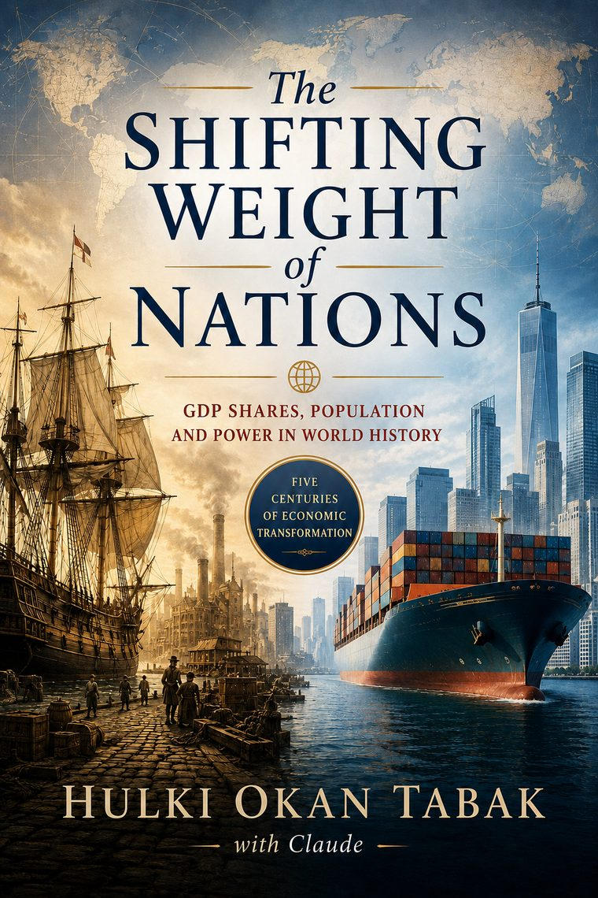

The full essay, online
about an hour · no download
The complete essay in your browser, with 16 live figures you can explore — toggle the West bloc, read every chart, follow the long view. Free, nothing to install.
Read the essay online →
GDP shares, population, and power in world history — five centuries of economic transformation.
Size is headcount; weight is productivity.
It takes a memorable claim about the economic weight of nations and subjects it to scrutiny rather than repeating or debunking it. Behind each share-point is a life the headline forgets — a clinic with a queue, a haircut in Delhi worth less at the exchange rate than the same hour in Zurich, a wage that buys more at home than the dollar admits. The whole method is one identity:
A nation's share of world GDP is population × price-level × productivity. People switch silently between two rulers — market-rate nominal and price-adjusted PPP — and between size and prosperity. Separate the rulers, divide out population, and five centuries of rise and fall collapse onto one durable variable: productivity.
Read the ruler first, the direction second, and the decimal point last.
Every edition is rendered from a single source of truth — one data file, one manuscript — so the formats can never drift. Same essay, three formats.
about an hour · no download
The complete essay in your browser, with 16 live figures you can explore — toggle the West bloc, read every chart, follow the long view. Free, nothing to install.
Read the essay online →62 pages · to keep & cite
The same essay, typeset with the cover — to download, print, quote, and cite. Embedded figures and reference tables; the citable artifact.
Download the PDF →spoken aloud · bring a TTS app
Prose stripped of tables and figure scaffolding so a text-to-speech app (Speechify, Peech, or your screen reader) reads it cleanly aloud. It is a document for TTS, not a recorded audio track.
Download the TTS edition →Short on time? A 5-minute version is published on Medium and Substack — the argument and the key figures, condensed.
The project is built as three layers, and naming them keeps the claim honest.
When a new IMF, World Bank, or UN release lands, the numbers change in one place (build/data.py), a 52-check suite re-runs, and every edition rebuilds. The argument — a method and a set of directions — does not expire when a denominator is revised. How to update when new figures land →
Earlier editions are never overwritten. Each release is preserved as a dated tagged version (v8.0 → today) on GitHub; a new edition stands beside the old one, it does not replace it.
Anyone may read, copy, fork, or translate it under the licence below. The ordinary way to propose a change is to fork and open a request to merge — git clone, edit build/data.py, run the suite, open a PR.
One safeguard: the canonical edition, the main branch, and this site are maintained solely by the author. Anyone is free to fork and publish their own version, but updating this essay and this site is the author's prerogative alone — a fork can never take over the original.
Data is drawn from public sources, kept in separate lanes and never spliced: IMF World Economic Outlook, World Bank WDI, UN World Population Prospects, the Maddison Project (deep history), and Bairoch (manufacturing). An independent analysis built from a public Uncommon Knowledge conversation (guest Stephen Kotkin, host Peter Robinson) — not a transcript, an endorsement, or a Hoover publication.
Every public macro-claim is logged and ruler-labelled in the claim registry; the verified numbers and their URLs live in source research.
PPP figures carry roughly ±5–10% structural uncertainty; deep-history figures are reconstructions with wide error bars. Read the ruler first, the direction second, and the decimal point last.
The essay is also published on these platforms. Each is a dated snapshot; the living, current version is this site and the repository.
Google Books carries the full eighth edition; Substack, Medium, X, and LinkedIn carry the compact version. When the data refreshes, the snapshots may lag — the current figures are always here.